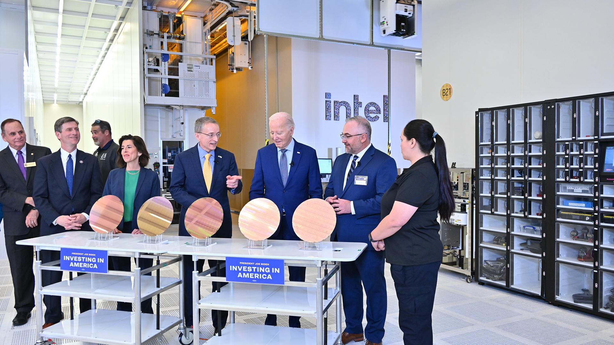
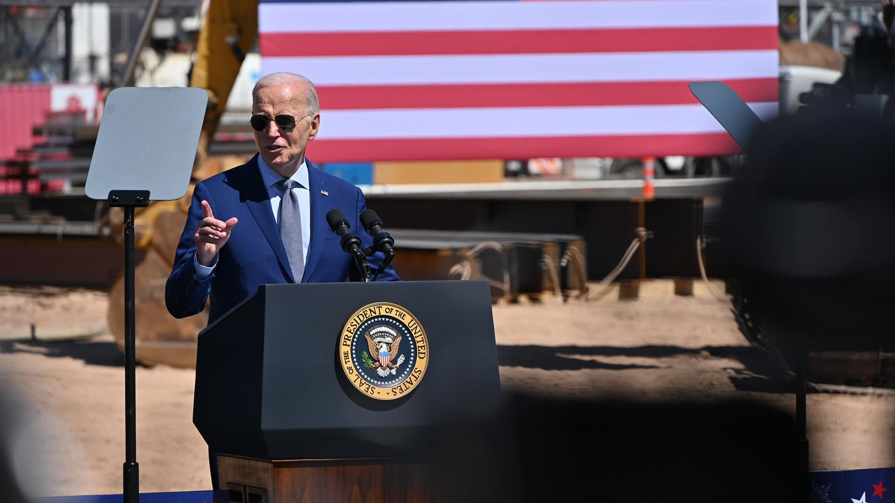
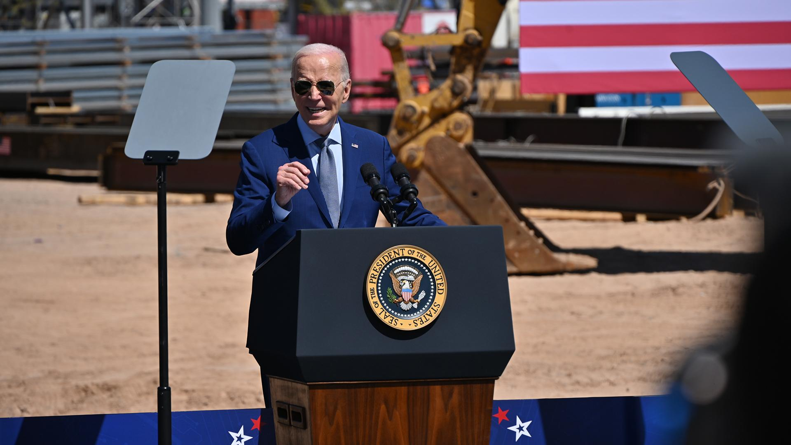
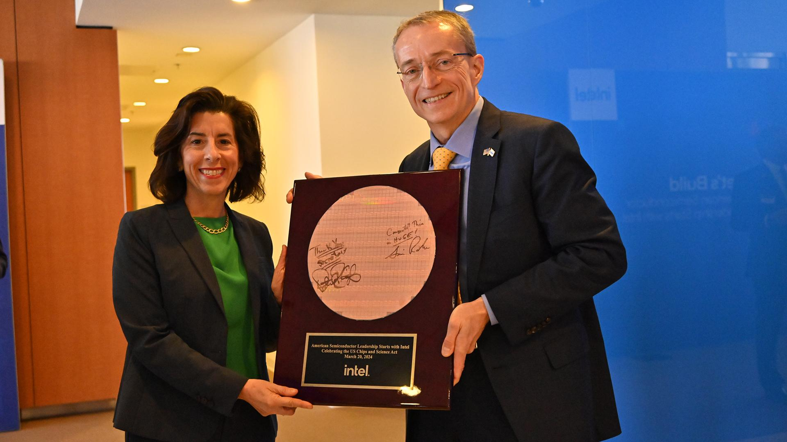

NEWS HIGHLIGHTS
- U.S. Department of Commerce has proposed up to $8.5 billion in direct funding through the CHIPS and Science Act to advance Intel’s commercial semiconductor projects in Arizona, New Mexico, Ohio and Oregon.
- Intel also expects to benefit from a U.S. Treasury Department Investment Tax Credit (ITC) of up to 25% on more than $100 billion in qualified investments and eligibility for federal loans up to $11 billion.
- Proposed funding supports Intel’s previously announced plans to invest more than $100 billion in the U.S. over five years to expand U.S. chipmaking capacity and capabilities critical to economic and national security and acceleration of emerging technologies, such as AI.
- Intel’s investments are expected to create more than 10,000 company jobs and nearly 20,000 construction jobs, and to support more than 50,000 indirect jobs with suppliers and supporting industries.
SANTA CLARA, Calif., and WASHINGTON, March 20, 2024 – The Biden-Harris Administration announced today that Intel and the U.S. Department of Commerce have signed a non-binding preliminary memorandum of terms (PMT) for up to $8.5 billion in direct funding to Intel for commercial semiconductor projects under the CHIPS and Science Act.
CHIPS Act funding aims to increase U.S. semiconductor manufacturing and research and development capabilities, especially in leading-edge semiconductors. Intel is the only American company that both designs and manufactures leading-edge logic chips. The proposed funding would help advance Intel’s critical semiconductor manufacturing and research and development projects at its sites in Arizona, New Mexico, Ohio and Oregon, where the company develops and produces many of the world’s most advanced chips and semiconductor packaging technologies.
“Today is a defining moment for the U.S. and Intel as we work to power the next great chapter of American semiconductor innovation,” said Intel CEO Pat Gelsinger. “AI is supercharging the digital revolution and everything digital needs semiconductors. CHIPS Act support will help to ensure that Intel and the U.S. stay at the forefront of the AI era as we build a resilient and sustainable semiconductor supply chain to power our nation’s future.”
Press Kit: U.S. CHIPS Act Funding for Intel
Together, the CHIPS Act proposed funding and Intel’s previously announced plans to invest more than $100 billion in the U.S. over five years constitute one of the largest public-private investments ever made in the U.S. semiconductor industry. The historic investment will create thousands of new company positions and construction jobs, foster U.S.-based R&D, strengthen U.S. supply chains, and help ensure American leadership in leading-edge semiconductor manufacturing and technology capabilities.
Today’s announcement demonstrates the U.S. government’s confidence in Intel’s leadership and commitment to expanding U.S. chipmaking capacity and capabilities. It is an investment in America’s technology future, bringing innovation, opportunity and jobs to America.
“There is no one who cares more about revitalizing American manufacturing than President Biden, and today’s announcement is a massive step towards ensuring America’s leadership in manufacturing for the 21st century. With this agreement, we are helping to incentivize over $100 billion in investments from Intel – marking one of the largest investments ever in U.S. semiconductor manufacturing, which will create over 30,000 good-paying jobs and ignite the next generation of innovation,” said U.S. Secretary of Commerce Gina Raimondo. “This announcement is the culmination of years of work by President Biden and bipartisan efforts in Congress to ensure that the leading-edge chips we need to secure our economic and national security are made in the U.S.”
Jack Weast, vice president and general manager of Intel Automotive, takes to the keynote stage at the AI Cockpit Innovation Experience event on Thursday, Aug. 8, 2024, in Shenzhen, China. (Credit: Intel Corporation)
Jack Weast, vice president and general manager of Intel Automotive, takes to the keynote stage at the AI Cockpit Innovation Experience event on Thursday, Aug. 8, 2024, in Shenzhen, China. (Credit: Intel Corporation)
Jack Weast, vice president and general manager of Intel Automotive, announces Intel Arc Graphics for Automotive, which is designed to enhance AI cockpit experiences, at the AI Cockpit Innovation Experience event on Thursday, Aug. 8, 2024, in Shenzhen, China. (Credit: Intel Corporation)
Jack Weast, vice president and general manager of Intel Automotive, announces Intel Arc Graphics for Automotive, which is designed to enhance AI cockpit experiences, at the AI Cockpit Innovation Experience event on Thursday, Aug. 8, 2024, in Shenzhen, China. (Credit: Intel Corporation)

Intel Automotive expands its product portfolio with Intel Arc Graphics for Automotive, a discrete graphics processing unit, allowing automakers to expand a new era of AI-powered cockpit experiences and personalization. (Credit: Intel Corporation)
Intel Automotive expands its product portfolio with Intel Arc Graphics for Automotive, a discrete graphics processing unit, allowing automakers to expand a new era of AI-powered cockpit experiences and personalization. (Credit: Intel Corporation)
Jack Weast, vice president and general manager of Intel Automotive, takes to the keynote stage at the AI Cockpit Innovation Experience event on Thursday, Aug. 8, 2024, in Shenzhen, China. (Credit: Intel Corporation)
Jack Weast, vice president and general manager of Intel Automotive, takes to the keynote stage at the AI Cockpit Innovation Experience event on Thursday, Aug. 8, 2024, in Shenzhen, China. (Credit: Intel Corporation)

Larry Geng, co-founder of Thundersoft, joins Jack Weast, vice president and general manager of Intel Automotive, at Intel’s AI Cockpit Innovation Experience event on Thursday, Aug. 8, 2024, in Shenzhen, China. (Credit: Intel Corporation)
Larry Geng, co-founder of Thundersoft, joins Jack Weast, vice president and general manager of Intel Automotive, at Intel’s AI Cockpit Innovation Experience event on Thursday, Aug. 8, 2024, in Shenzhen, China. (Credit: Intel Corporation)
Zhang Fan, Zhipu AI chief operating officer, joins Jack Weast, vice president and general manager of Intel Automotive, to demonstrate Zhipu’s AI Car Assistant and the power of local large language models (LLMs) running on Intel's compute platform. The presentation was part of the AI Cockpit Innovation Experience event on Thursday, Aug. 8, 2024, in Shenzhen, China. (Credit: Intel Corporation)
Zhang Fan, Zhipu AI chief operating officer, joins Jack Weast, vice president and general manager of Intel Automotive, to demonstrate Zhipu’s AI Car Assistant and the power of local large language models (LLMs) running on Intel's compute platform. The presentation was part of the AI Cockpit Innovation Experience event on Thursday, Aug. 8, 2024, in Shenzhen, China. (Credit: Intel Corporation)
Dave Zinsner, executive vice president and chief financial officer at Intel, addresses the audience by video message during Intel’s AI Cockpit Innovation Experience event on Thursday, Aug. 8, 2024, in Shenzhen, China. (Credit: Intel Corporation)
Dave Zinsner, executive vice president and chief financial officer at Intel, addresses the audience by video message during Intel’s AI Cockpit Innovation Experience event on Thursday, Aug. 8, 2024, in Shenzhen, China. (Credit: Intel Corporation)
Gary Gao, general manager of technology at Intel China, joins Jack Weast, vice president and general manager of Intel Automotive, on stage to demonstrate new AI cockpit solutions during Intel’s AI Cockpit Innovation Experience event on Thursday, Aug. 8, 2024, in Shenzhen, China. (Credit: Intel Corporation)
Gary Gao, general manager of technology at Intel China, joins Jack Weast, vice president and general manager of Intel Automotive, on stage to demonstrate new AI cockpit solutions during Intel’s AI Cockpit Innovation Experience event on Thursday, Aug. 8, 2024, in Shenzhen, China. (Credit: Intel Corporation)

Ying Li, vice president and general manager of Software Advanced Technology Group at Intel China, joins Jack Weast, vice president and general manager of Intel Automotive, on stage to introduce the open software platform enablement for Intel’s new AI cockpit solutions. The presentation was part of the AI Cockpit Innovation Experience event on Thursday, Aug. 8, 2024, in Shenzhen, China. (Credit: Intel Corporation)
Ying Li, vice president and general manager of Software Advanced Technology Group at Intel China, joins Jack Weast, vice president and general manager of Intel Automotive, on stage to introduce the open software platform enablement for Intel’s new AI cockpit solutions. The presentation was part of the AI Cockpit Innovation Experience event on Thursday, Aug. 8, 2024, in Shenzhen, China. (Credit: Intel Corporation)

Download all images (ZIP, 54 MB)
Under the PMT, Intel would also have the option to draw upon federal loans of up to $11 billion. Intel also plans to claim the U.S. Treasury Department’s Investment Tax Credit (ITC), which is expected to be up to 25% of qualified investments of more than $100 billion over five years. The PMT provides that the direct funding award and federal loans are subject to due diligence and negotiation of a long-form term sheet and award documents, and are conditional on the achievement of certain milestones and remain subject to availability of funds.
Technology Leadership
Intel's strategy is centered on three core elements – establishing process technology leadership, building a more resilient and sustainable global semiconductor supply chain, and creating a world-class foundry business – all of which align with the objectives of the CHIPS Act to promote semiconductor manufacturing and technology leadership in the United States.
In addition to its significant investments to expand U.S. manufacturing capacity, Intel is on track to deliver five semiconductor process nodes in four years and expects to return to process technology leadership by 2025 with Intel 18A. Intel recently announced an extended process technology roadmap that adds the more-advanced Intel 14A to the company’s leading-edge node roadmap, in addition to several specialized node evolutions.
Systems Foundry for the AI Era
Intel Foundry brings together Intel’s Technology Development, Global Manufacturing and Supply Chain, and foundry customer service and ecosystem operations, enabling all the critical components customers need to design and manufacture chips for a new era of AI-driven computing. As the world’s first systems foundry for the AI era, Intel Foundry offers full-stack optimization from the factory network to software, and enables customer readiness for Intel process and packaging designs with broad intellectual property and electronic design automation support from ecosystem partners.
U.S. Manufacturing and R&D Investments
Intel is dedicated to advancing U.S. efforts to regain its leadership position in this vital industry through its investments to expand chipmaking capabilities and capacity. CHIPS Act proposed funding would support Intel’s investments in Arizona, the Silicon Desert; New Mexico, the Silicon Mesa; Ohio, the Silicon Heartland; and Oregon, the Silicon Forest.
Intel was founded in the U.S. and has been innovating, investing and supporting global semiconductor manufacturing and R&D for more than 50 years. Intel currently employs nearly 55,000 people in the U.S., indirectly supports over 720,000 American jobs and contributes more than $102 billion annually to U.S. GDP. With support from the CHIPS Act funding, Intel’s planned U.S. investments are expected to create more than 10,000 new permanent jobs at Intel and nearly 20,000 construction jobs, and they will indirectly support more than 50,000 jobs with suppliers and supporting industries.
Semiconductor Talent and Sustainable Manufacturing
To meet the growing demand for future semiconductor talent, Intel is driving innovative partnerships with government and academia to create a robust and diverse ecosystem of skilled semiconductor talent critical to the success of the entire semiconductor industry and the U.S. economy. Intel announced a $100 million investment in 2022 to expand semiconductor education, research and workforce training opportunities across the nation. This investment includes a $50 million partnership with the National Science Foundation and $50 million to fund the Semiconductor Education and Research Program (SERP) for Ohio – a collaborative, multi-institution program designed to directly support Intel’s investments in the Silicon Heartland.
Intel recognizes that resilient supply chains must also be sustainable, and the company is committed to becoming the industry’s most sustainable semiconductor foundry. Intel currently uses 100% renewable electricity in fabs and other operations in the U.S. and recently redoubled its commitment to achieve 100% renewable electricity worldwide by 2030. In addition, Intel has aggressive goals of achieving net-positive water and zero waste to landfills by 2030, net-zero Scope 1 and 2 greenhouse gas (GHG) emissions by 2040 and net-zero upstream Scope 3 emissions by 2050. On March 19 and 20, Intel convened more than 100 companies across its value chain, along with nongovernmental organizations (NGOs) and representatives from government and academia, for a global Intel Sustainability Summit focused on defining a united approach to lower the industry’s collective environmental footprint.
More: Intel CEO Pat Gelsinger leads an event to celebrate Intel’s CHIPS and Science Act direct funding announcement at 10:15 a.m. PDT today. View a livestream on the Intel Newsroom.
Forward-Looking Statements
This release contains forward-looking statements, including with respect to Intel’s:
- expected benefits under the CHIPS and Science Act, including with respect to direct funding and loans;
- expectations as to ITC benefits and the qualification of Intel’s investments for the ITC;
- business plans and strategy and anticipated benefits therefrom;
- future products, services, and technologies and expectations regarding product and process leadership;
- investment plans and impacts of investment plans, including manufacturing capacity expansion plans and additional jobs expected to be created;
- plans and goals related to Intel Foundry;
- AI strategy and capabilities;
- future social and environmental performance goals, measures, strategies, and results; and
- other characterizations of future events or circumstances.
Such statements involve many risks and uncertainties that could cause our actual results to differ materially from those expressed or implied, including those associated with:
- the high level of competition and rapid technological change in our industry;
- the significant long-term and inherently risky investments we are making in R&D and manufacturing facilities that may not realize a favorable return;
- the complexities and uncertainties in developing and implementing new semiconductor products and manufacturing process technologies;
- our ability to time and scale our capital investments appropriately and successfully secure favorable alternative financing arrangements and government grants;
- implementing new business strategies and investing in new businesses and technologies;
- changes in demand for our products;
- macroeconomic conditions and geopolitical tensions and conflicts, including geopolitical and trade tensions between the U.S. and China, the impacts of Russia's war on Ukraine, tensions and conflict affecting Israel, and rising tensions between mainland China and Taiwan;
- the evolving market for products with AI capabilities;
- our complex global supply chain, including from disruptions, delays, trade tensions and conflicts, or shortages;
- product defects, errata, and other product issues, particularly as we develop next-generation products and implement next-generation manufacturing process technologies;
- potential security vulnerabilities in our products; increasing and evolving cybersecurity threats and privacy risks;
- IP risks including related litigation and regulatory proceedings;
- the need to attract, retain, and motivate key talent;
- strategic transactions and investments;
- sales-related risks, including customer concentration and the use of distributors and other third parties;
- our significantly reduced return of capital in recent years;
- our debt obligations and our ability to access sources of capital;
- complex and evolving laws and regulations across many jurisdictions;
- fluctuations in currency exchange rates;
- changes in our effective tax rate;
- catastrophic events;
- environmental, health, safety, and product regulations;
- our initiatives and new legal requirements with respect to corporate responsibility matters; and
- other risks and uncertainties described in this release, our most recent Annual Report on Form 10-K and our other filings with the U.S. Securities and Exchange Commission (SEC).
All information in this press release reflects Intel management views as of the date hereof unless an earlier date is specified. Intel does not undertake, and expressly disclaims any duty, to update such statements, whether as a result of new information, new developments, or otherwise, except to the extent that disclosure may be required by law.
Tags
Corporate,
Manufacturing,
Intel Foundry